The Hidden Enemy Behind GLP-1 Hair Loss
If you've started taking Ozempic, Wegovy, or Mounjaro — and your hair is falling out faster than you're losing weight — the real reason behind it will shock you.
Ask any woman on the pens what nobody warned her about, and you'll get the usual list.
The nausea. The taste in her mouth. The way food suddenly stopped being interesting.
But there's one that comes up again and again in GLP-1 Facebook groups, in comment sections, and in the private conversations between women losing weight together.
The hair.
And it's the only one on the list that nobody knows what to do about.
Mia Jones knows exactly why.
“Everyone warns you about the nausea,” says Mia, 38, from her home in Chandler, Arizona. "Nobody sits you down and explains that you're going to have to choose between your body and your hair.”
“I spent twenty years waiting to feel beautiful. I got there. And then six months later I was hiding again — just for a different reason.”
“You Have Such Pretty Hair”: How One Sentence Held Mia Together For 20 Years
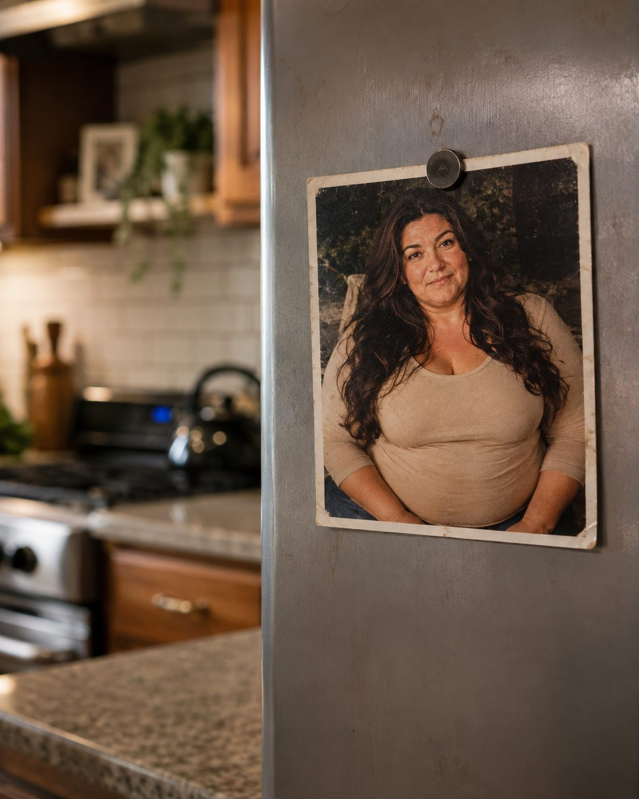
Mia was fat her entire adult life.
She uses the word without flinching. “I'm not going to dance around it. I weighed 247 pounds and I knew it every single day of my life.”
And every woman who has ever been in that body knows the compliment.
The one that comes with an asterisk.
You have such a pretty face.
You have such pretty hair.
I heard that my whole life, she says. And I knew exactly what it meant. It meant: there's one thing about you I can compliment without lying.
But you know what? I took it. I took it with both hands.
Because it was true. Her hair really was beautiful. Thick, dark, heavy — the kind hairdressers comment on.
And for 20 years, it was the only thing about her that she let anyone look at.
“My hair wasn't vanity. It was my shield. It was the one thing I had that somebody always complimented.”
She wore it down every day. Never up. She used it to cover her neck, to cover the side of her face, to give people something to look at other than her body.
Then, 2 years ago, her doctor prescribed a Mounjaro.
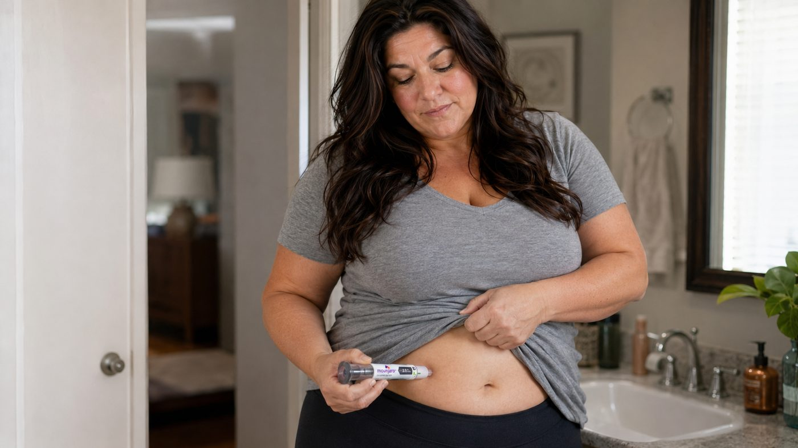
And for the first time in her life, the scale started going down and didn't stop.
82 Pounds, a Dress, and the First Time in Two Decades She Felt Seen
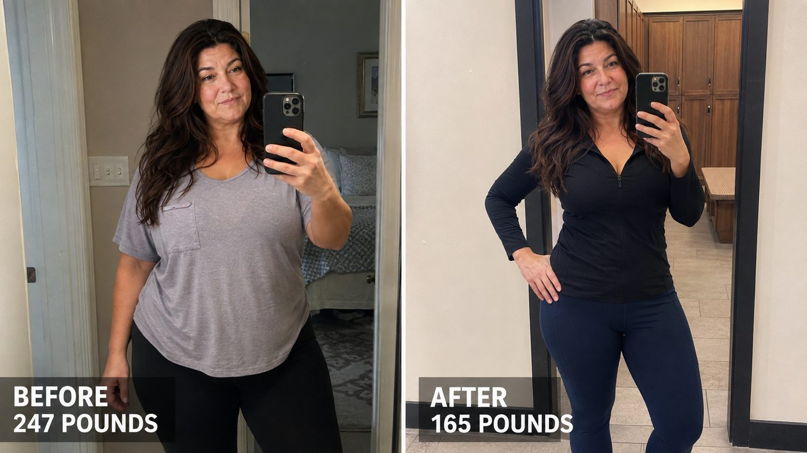
In 14 months, Mia went from 247 pounds to 165.
I can't explain what that does to your head, she says. It isn't about the number. It's about walking into a store and walking out with a bag. It's about climbing stairs and being able to talk at the same time.
It's about someone looking at you at a party and you not immediately looking away.
She bought clothes for the first time in nine years. She started going to the gym. She said yes to things she'd spent two decades saying no to.
And last summer, she got on a dating app for the first time in her life.
That's how she met Marcus.
My first date in 11 years.
And I got ready that night and looked in the mirror and thought — oh my God, this is it. This is how I was supposed to feel this whole time.
“I finally climbed out of that dark hole. After twenty years of hiding, I was on the outside.”
She and Marcus have been together ever since.
And it was right around then that she started finding her hair everywhere.
The Scary Moment Mia Realized It Wasn't Going to Stop
At first she wasn't even worried.
I'd read that this happens when you lose weight fast. Everyone in the group talked about it. “You'll shed a little, then it normalizes.”
So she wasn't alarmed by the strands on her pillow. Or the shower drain. Or the brush.
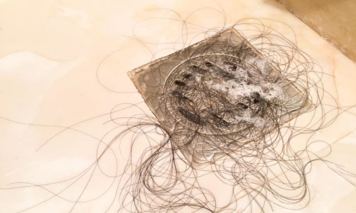
- Month 4She wasn't alarmed.
- Month 6She started counting.
- Month 8She stopped mentioning it to people.
Everyone said it normalizes. So I waited. That's what we do, right? We wait.
It didn't normalize.
“I'd stand under the bathroom light and just stare,” she says.
“Every month there was a little more scalp showing through. It was like watching a crack spread across a wall.”
Then came the photo.
The “after” photo.
The one she'd waited two years to take — the one she was going to post in the weight loss group where she'd stayed silent the entire time, reading other women's wins and waiting for her turn.
She asked a friend to take it at the restaurant, the night she hit 165.
The friend was standing. Which means the camera was above her.
“I opened that photo and my stomach dropped. The body I'd fought ten years for was right there. And I couldn't look at anything except my part.”
“That was the photo. That was the photo I waited my whole life to take. And I never posted it.”
But the worst morning came later.
She was going out with Marcus. She was washing her hair, getting ready, the way she'd learned to enjoy doing again.
And when she ran her hand through to rinse the shampoo out, it wasn't a few strands.
It was a clump. In the palm of my hand, under the shower.
And I just sat down. Sat down in the shower, water running, holding it.
She canceled the date that night. Told him she wasn't feeling well.
“I took a photo of it, because I didn't think anyone would believe me. That photo ended up mattering more than I could have guessed.”
From Finally Visible to Hiding All Over Again
And here's the part Mia says is the cruelest of all.
I went back to hiding. Except this time I wasn't hiding my body.
I was hiding the one thing I'd always had.
She stopped wearing her hair down — which, for her, was everything. 20 years of wearing it down as a shield, and suddenly down was the exact thing she couldn't do anymore, because down shows the part.
So the bun came. Then the deep side part, dragged over from almost above her ear. Then clips, then scarves, then root touch-up powder in two shades, one compact in her purse and another in the car.
“I had a closet full of new clothes with the tags still on. And I stayed home. What's the point of fitting into a size 10 dress if you can't walk away from the mirror because of the top of your head?”
Then the disappearing started.
She stopped going to the salon — and that's the one nobody outside of this understands. A hairdresser parts your hair. In sections. Under bright lights. While it's wet, which is when it looks its absolute worst. And there's a mirror directly in front of you the entire time.
The woman who'd cut her hair for twelve years was the same one who always said “wow, what hair.” Mia stopped booking and never explained why.
She started deleting photos. Not just avoiding them — deleting them. She'd go through her camera roll at night removing the ones where the light had hit wrong.
She stopped sitting down when everyone else was standing.
And she started pulling away from Marcus's hand.
He'd run his hand through my hair the way people do, without thinking. And my whole body would lock up.
He thought for months that I was cooling off on him. It never occurred to me that he'd think that. I was just scared of what would be left in his hand.
And underneath all of it was the calculation she says she ran every morning, in silence, and never said out loud to anyone.
“I fought 10 years for this body. And I was sitting on the bathroom floor seriously considering throwing it away to stop losing hair. Nobody should have to do that math.”
Until it got bad enough that she went back to her doctor, hoping this would finally be solved.
A 90-Second Diagnosis and the Choice That Sent Mia Looking For the Real Answer
Her doctor ordered bloodwork.
The verdict took about 90 seconds:
Mia pointed out it had already been over a year.
“Some people take longer. If it's really bothering you that much, we can talk about lowering the dose or stopping the medication.”
And that's where I stop you, Mia says. Because that was the answer. That was the professional answer I got.
She was offered topical minoxidil too — with the usual warning.
“It's ongoing use. Once you stop, whatever you gained tends to go.”
I sat in the parking lot thinking: so I trade one forever-medication for another forever-medication, and at no point did anyone tell me what's actually happening to my hair.
So she did what millions of women do.
She tried everything else.
- Biotin gummies, religiously, for nine months.
- Collagen powder in her protein shake.
- Rosemary oil, because a video with four million views said to.
- A multivitamin “for people on GLP-1," with packaging made for women exactly like her.
- A $60 “thickening” shampoo. A volumizing spray that made her hair smell like a salon and look exactly the same.
My bathroom counter looked like a pharmacy, she says.
And my ponytail kept getting thinner anyway.
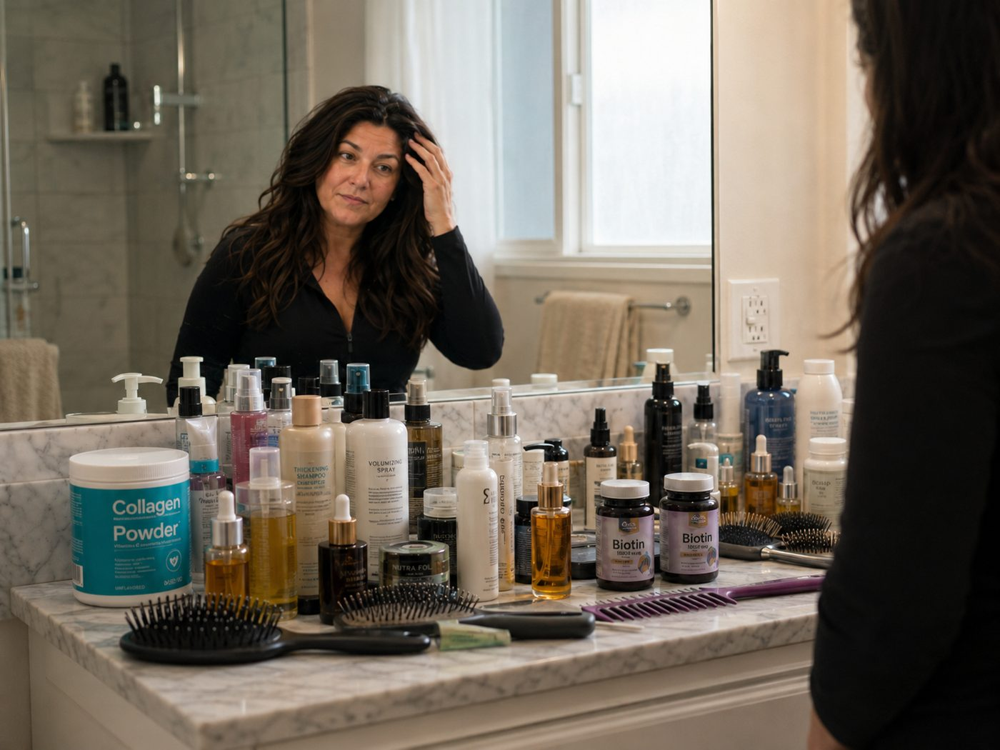
The 11PM Facebook Post That Drew 400 Comments Overnight (And the Comment From a Dermatologist That Explained What No Doctor Could)
Last fall, Mia finally wrote something in the GLP-1 group she'd been silently reading for two years.
Except it wasn't to post the “after” photo.
“11 o'clock, sitting in bed, feeling about as low as I've ever felt” — and she posted two photos side by side.
The restaurant photo. 82 pounds down, new dress, smiling.
And the clump of hair in her palm, under the shower.
The caption: “I did it. And I can't celebrate. Is this normal? I'm scared and I don't know who else to ask.”
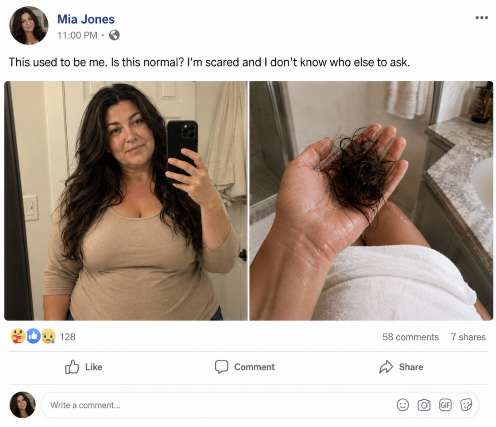
She almost deleted it.
Then she fell asleep.
By morning, there were over 400 comments.
I sat there reading them for an hour with my hand over my mouth.
Women posting photos of their own drains. Women saying they cried at the salon, stopped swimming, stopped letting their husbands touch their hair — just like me.
And dozens of them running the exact same calculation I was running. Is it worth it? Do I stop the pen? Would I rather have the weight back?
“I thought I was the only one. There were hundreds of us in one thread.”
And scattered through those comments, Mia noticed something else.
The same explanation kept coming up, over and over — usually from women who had already come out the other side.
One comment in particular was so specific that Mia copied the whole thing into the notes app on her phone.
It was from a dermatologist.
“Honey, your hair isn't the problem. It's what's underneath it. And nothing you put ON TOP of your scalp is going to fix it.”
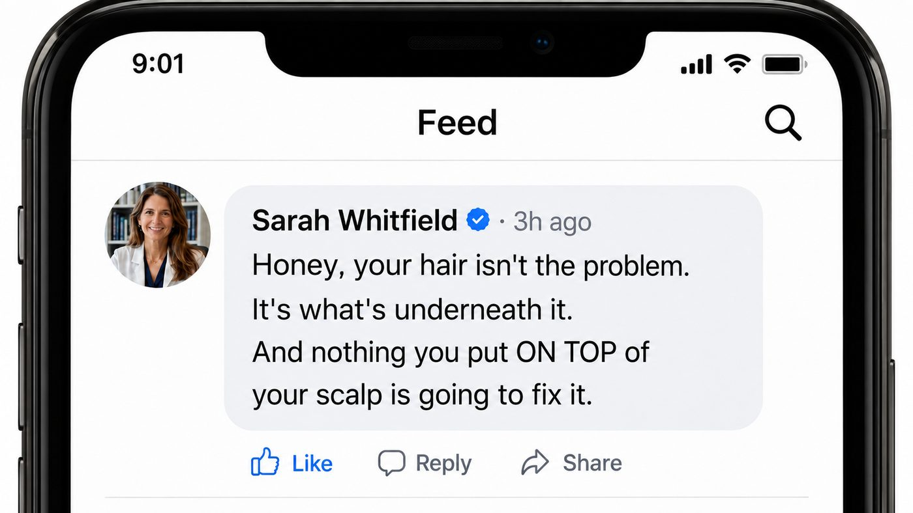
Mia went and looked at the profile.
Dr. Sarah Whitfield. Dermatologist. 22 years in practice, more than 12,000 patients, and a decade with a closed schedule and a four-month waiting list.
Mia sent a direct message assuming she'd never hear back.
Dr. Whitfield answered in forty minutes.
And offered a video call on Saturday morning.
The Secret Exposed: Why Biotin, Collagen, Rosemary Oil and Minoxidil All Fail at the Same Step
Saturday morning, 9 a.m., Mia sat at her kitchen table with a coffee and opened the link.
"She shared her screen with me," Mia says. "A dermatologist I'd never met in my life, on a Saturday morning, drawing me a hair follicle."
What Dr. Whitfield explained over the next forty minutes is something Mia says no doctor had ever mentioned to her — not once, in two years of appointments.
We reached out to Dr. Whitfield afterward and asked her to explain the same thing for our readers.
It comes down to something she calls Hair Collapse.
And it starts with a fact about body fat that almost nobody knows.
“For years, your body fat was quietly doing something for you that you never knew about," she says. “It was producing estrogen. Fat tissue is one of the body's major sources of it — and the more of it you carry, the more estrogen it makes.”
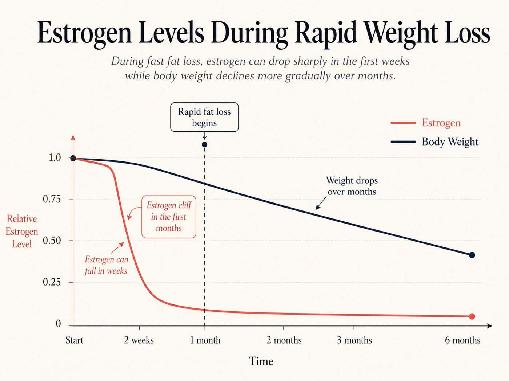
And estrogen, she explains, is exactly what keeps hair thick, full and locked in place.
So here's what happens on the GLP-1 pens — Ozempic, Mounjaro and Wegovy.
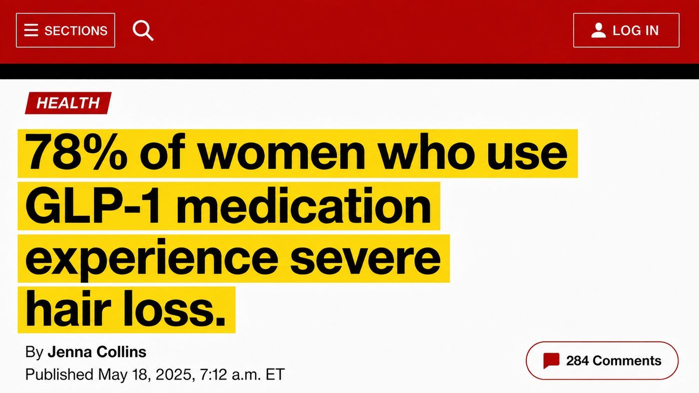
When you lose fat this fast, that estrogen supply doesn't taper off. It collapses.
Not gradually, over years, the way it happens to most women.
All at once.
“That's why your hair falls faster than the weight comes off. The weight leaves over months. The estrogen leaves in weeks.”
And when estrogen crashes, a far more aggressive hormone takes over.
It's called DHT.
“The hair-killing hormone,” as Dr. Whitfield put it.
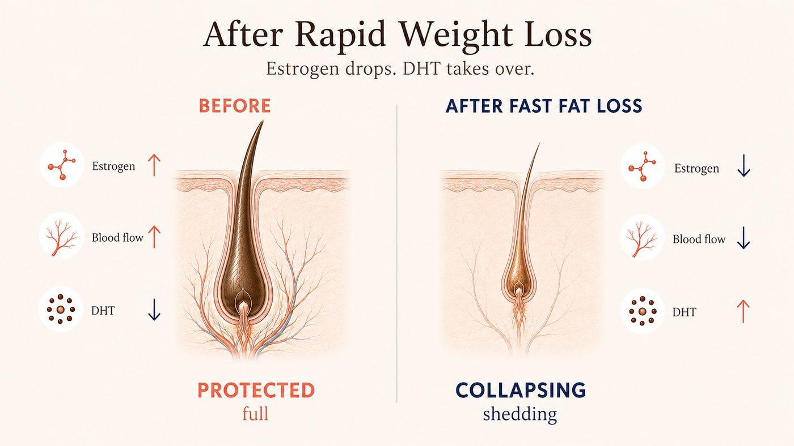
“Think of DHT like crabgrass in a garden.”
It wraps around the root of every hair, deep under your scalp, and strangles it. It cuts off the blood. It cuts off the nutrients.
And strand by strand, it destroys your hair from the root up.
The hair gets thinner. Then weaker. Then it lets go — and nothing grows back to replace it.

And this is where Dr. Whitfield says the standard advice fails women on the pens completely.
“It isn't 'just the rapid weight loss settling down.' It's your hair being choked from below the moment your estrogen dropped. And the longer DHT keeps its grip, the longer it drags on.”
Everyone had told me to wait it out, Mia says. Wait for it to normalize. Wait until your weight stabilizes. Wait, wait, wait.
She was the first person to tell me that waiting was the thing making it worse.
And then she asked me a question that stopped me cold. She asked whether anyone had ever tested my estrogen.
Thyroid, iron, ferritin, vitamin D — I'd had all of it done twice. Nobody had ever said the word estrogen to me. Not once.
But then came the part Mia says she'll never forget.
“The root isn't dead. Not yet.”
“It's being strangled. And the moment you rip the DHT off it, the root can come back to life — and grow hair again.”
And it doesn't matter, Dr. Whitfield explained, if you:
- Take biotin every day
- Switch shampoos every month
- Spend hundreds on salon treatments
While DHT has the root in its grip — your hair will not grow back.
Then she pulled up one more slide.
“DHT is acting approximately four millimeters below the surface of your scalp.”
That's the part Dr. Whitfield says almost nobody hears.
Below shampoo, which goes down the drain in sixty seconds. Below oils and serums, which sit on top of the skin. Below pills and gummies, which the body flushes out within hours — and which, on a GLP-1, you're absorbing less of than you ever have.
“I have prescribed nearly everything on that bathroom counter," Dr. Whitfield says. "And not one of those things was built to travel that deep. They stop at the surface. The problem doesn't live at the surface.”
She wasn't telling me my products were bad, Mia says. She was telling me they were never even in the right place.
And there's a second problem stacked on top of the first.
Because rapid weight loss doesn't only take estrogen. It takes protein, collagen and circulation with it. So while DHT is strangling the root, the scalp around it quietly degrades too — thinner, drier, less supplied.
Which means that even when a woman does get some regrowth, it comes up out of ground that can't support it, and it breaks before anyone can see it.
“So women on the pens aren't failing at fixing their hair,” Dr. Whitfield says.
“They're being told to choose between their health and their hair — when the real problem was never the medication. It's what the medication changed underneath, and nobody addressed it where it was happening.”
The Formula That Finally Matched What Dr. Whitfield Explained, Point by Point.
Near the end of the call, Mia asked the obvious question.
So what actually reaches 4 millimeters down?
Dr. Whitfield said there was one ingredient she'd been working with for decades — just never on a scalp.
The Copper Peptide.
The only thing small enough to get down there.
Its full name is Copper Tripeptide-1 (GHK-Cu).
Not a vitamin. Not an oil. Not a shampoo.
It's a molecule small enough to pass through the surface of your scalp.
Not sit on it. Not coat it. Through it.
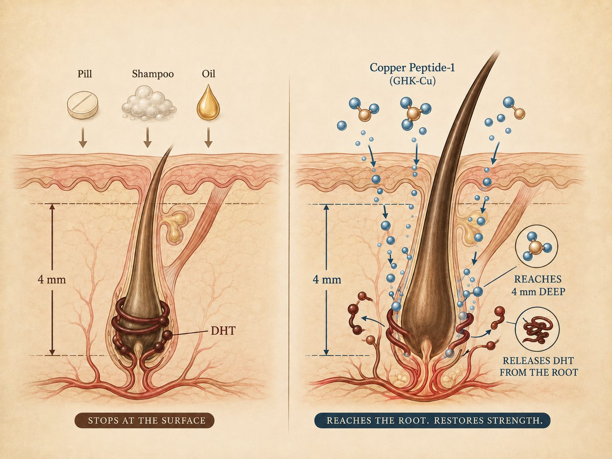
The copper peptide is already well known in dermatology, mainly for one reason: it’s small enough to penetrate where almost nothing else can.
“That’s why it works so well on the face,” she told Mia.
“The medicine had never looked at GHK-Cu as a solution for hair, since it was classified as a skin ingredient. But the scalp is skin.”
That’s why it can reach so deep, down to where the DHT is.
And once it's there, it does the one thing nothing on that shelf can do:
It blocks DHT at the root and pries its grip off the follicle.
The blood comes back. The nutrients come back.
And roots that had gone quiet start pushing hair out again — from underneath, not painted on top.
But a copper peptide on its own was still only one piece.
Because freeing the root doesn't help if the ground above it can't hold what grows.
So she built it into a complete system — with 4 clinically-backed ingredients:
She called it Crowned®.
A lightweight scalp serum built around one job: getting DHT off your roots and keeping it off.
Not a shampoo that rinses away. Not a pill your body flushes in four hours. Not a treatment you can never stop.
2 sprays to the scalp. Morning and night. 10 seconds.
That's the entire routine.

Crowned® Hair Regrowth Serum. One full dropper daily on the scalp.
The Science Behind Crowned®
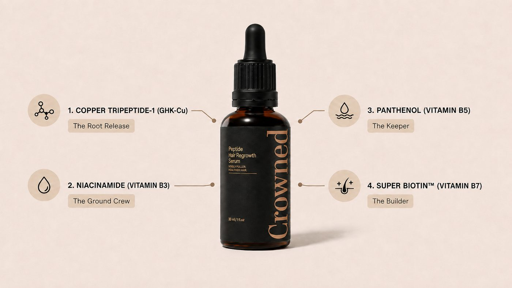
Small enough to pass the surface and travel the full 4 mm to the follicle, where it breaks DHT's grip and reopens the supply line.
Goal: a root that can receive blood and nutrients again.
Restores the scalp's barrier, calms the inflammation that starves follicles, and improves blood flow to the root.
Goal: ground that can actually hold the new hair.
Ends the itching, flaking and dryness that snap new strands at the shaft before they're ever long enough to see.
Goal: new growth that survives long enough to count.
The clinically studied level, not the token dose in drugstore gummies — paired with zinc and silica for strand strength and body.
Goal: new growth that comes in thicker, stronger, and stays.
The Crowned® 4-Step Root Rescue
- RELEASE — Copper Tripeptide-1 reaches 4 mm down and blocks DHT's grip on the root, so blood and nutrients come back.
- FEED — Niacinamide rebuilds a calm, well-supplied scalp — the ground the new hair has to grow out of.
- HOLD — Panthenol hydrates and strengthens, so the strands you grow don't snap off before you can see them.
- BUILD — Super Biotin™ with zinc and silica, gives the follicle the raw material to build a thicker, stronger strand that stays.
And then, Mia says, Dr. Whitfield did something that caught her completely off guard.
She got almost uncomfortable about it.
“I want to be very clear with you,” she told Mia. “I didn't build this to sell it. I built it because I couldn't keep watching women walk away from a treatment that was working, because of their hair.”
And then she said: don't believe a word I've said. You don't know me. I'm a stranger on the internet who commented on your post.
Go back to the group you're already in. Search the word "Crowned." Read what the women there say. Not what I say.
So Mia hung up and did exactly that.
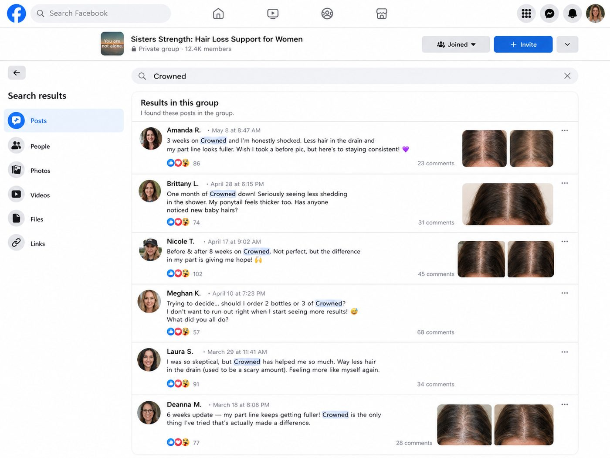
I typed it into the group search bar and I just... sat there.
Post after post after post. Months of them. Before-and-afters at the part line. Women on the pens counting strands in the drain the same obsessive way I did. People arguing about whether two bottles was enough or three.
Some of those threads were a year old. Nobody was selling anything. They were just talking to each other, the same way we all had been about nausea and dosing.
“That's what got me. Not the doctor. The women on the same pen as me who'd already been through it.”
She had a bathroom counter full of things that hadn't worked, a closet of new clothes with the tags on, and an "after" photo on her phone she'd never posted.
I'd already tried everything else. It felt insane not to try the one thing that was actually aimed at the right place.
She ordered that afternoon.
Mia's Hair in 90 Days: The Week-by-Week Timeline of When Her Roots Finally Got What They'd Been Missing
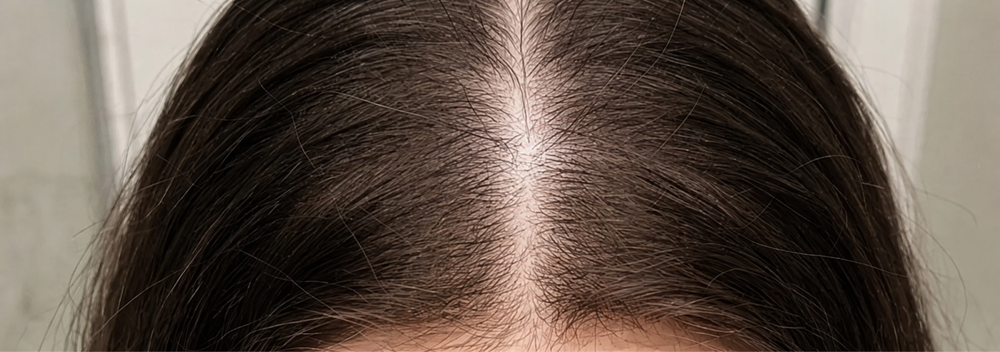
Mia took a photo the day the bottles arrived — "the worst photo I've ever taken on purpose."
She parted her hair, held the phone above her head, and pressed the button.
I spent two years making sure that exact angle never got photographed, she says. And that's the one that ended up mattering most.
Here's her timeline, in her words:
The first thing that changed was the drain.
I counted — I know how that sounds, but every woman reading this understands.
Seven strands after a wash. Seven. I used to lose a clump.
I stood in the shower laughing like a crazy person.
Stronger between my fingers. Less of that feeling like it was about to let go.
And the ponytail — I used to wrap the elastic three times and have room left over. By that point I'd been going around four times for over a year. It went back to three.

I was washing my face and caught my reflection at an angle — and there they were.
Tiny baby hairs at my temples, maybe a quarter inch, standing straight up like a little halo.
I called Marcus into the bathroom. He squinted at my hairline and said: "that's growing in."
I just cried at the sink. And then I had to explain to him why I'd been pulling away from his hand for eight months.
My part is visibly narrower — I compare it to my day-one photo about once a week.
I started wearing it down again without even thinking about it. That's the part I didn't expect. I just... did.
And I posted in the group. The "after" photo that sat on my phone for two years.
Except I took a new one. With my hair down.
"Two hundred and eleven comments. And I read every single one. After two years of being silent in that group, I finally got my turn."
Crowned says Mia's timeline tracks with what most women report:
- Shedding typically slows within the first two to four weeks
- Baby hairs appear along the hairline between weeks 4 and 8
- Visible density at the part line is a months-long process, not a weeks-long one
Which is why the company built the guarantee to run 90 days.
Real Women. Real Results.
Melissa isn’t an isolated case.
We asked Crowned for permission to contact customers directly, and spoke with four women who agreed to share their photos.
Each one had a different reason to believe it wouldn’t work for her.
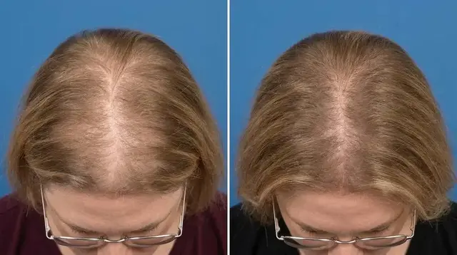
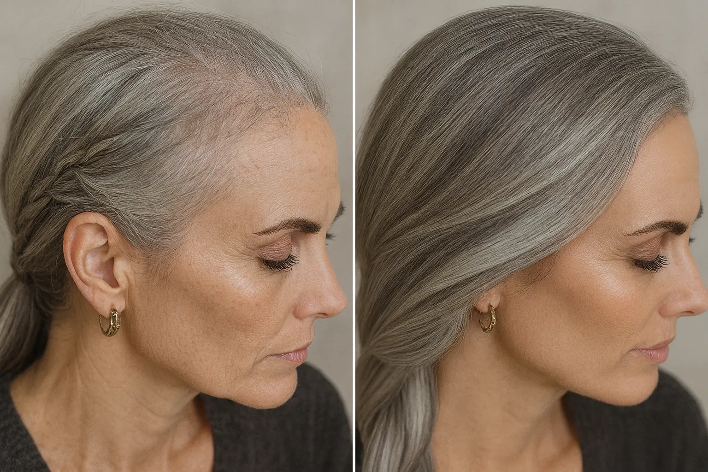

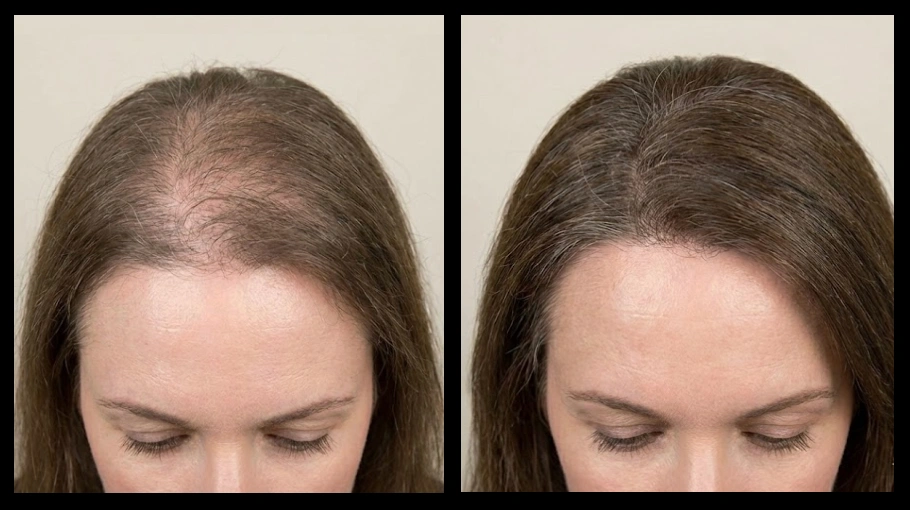
4 Signs This Was Built For a Woman Exactly Like You
We asked Dr. Whitfield who, in her experience, responds best.
She didn’t hesitate.
“It was built for the woman who has already done everything right.”
If you’ve taken the supplements exactly as directed for a year. If you’ve followed the routine, bought the serum, gone to the appointments, and shown up for a treatment plan that never gave you back what it promised — you are the exact person she made this for. Not because you didn’t try hard enough. Because none of it was ever aimed at the right place.
“It was built for the woman whose body changed the rules on her.”
Perimenopause. Menopause. The moment where the same hair you’d had your whole life started behaving like someone else’s. If you can point to roughly when it started and it lines up with your hormones shifting, that’s not a coincidence — that’s the mechanism in this article.
“It was built for the woman who wants out of the rental agreement.”
If you’re on minoxidil and the thought of stopping scares you, you already understand the problem. You don’t want something that holds your hair hostage. You want the thing that’s strangling the root gone.
Who It Is NOT For
Then she said something we didn’t expect from someone who makes the product.
“I’d rather turn a woman away than take her money.”
The True Cost of Not Addressing This Issue
Let’s talk honestly about money.
Not just the price of Crowned. The price of continuing exactly as you are.
PRP injections run several hundred dollars a session, and they want you to do a series.
A transplant costs five figures — and it doesn’t stop DHT. It just moves hair to a place DHT hasn’t reached yet.
Minoxidil is cheap per bottle and expensive forever, because the day you stop is the day it all starts over.
But the quiet expense is the graveyard inside your bathroom cabinet.
- Biotin$40
- A thickening shampoo. Then another one.$32
- A serum you believed worked$68
- The treatment that lasted three washes$200
- A topper you’ve worn twice$180
- Scarves, clips, powders, sprays, and a hat you don’t even like—
Everything that failed, versus the one bottle that goes where the damage is.
For most women, it isn’t one expensive mistake.
It’s $40 here, $60 there, over and over, for years.
And then there’s the cost nobody puts on a receipt.
Twenty-five minutes every single morning. Not to look beautiful — to cover. Do the math on that one. Twenty-five minutes a day is over 150 hours a year. Six full days of your life, every year, spent arranging something to hide something else.
Two years of never wearing your hair down.
Two years of scarves you actively disliked, bought anyway, because they weren’t accessories — they were equipment.
Every photo you volunteered to take so you wouldn’t be in it.
Every time you looked in the mirror and saw a woman ten years older than you are.
And the worst line item of all: another year of waiting to see if it stops on its own.
It doesn’t stop on its own. That’s the entire point of everything you just read. Every morning you wait, DHT is destroying roots that were still alive this month and won’t be next year.
Doing nothing isn’t free.
It’s the most expensive thing you’ve been buying — and you’ve been paying for it every single morning, in front of the mirror, without ever taking out your credit card.
And if the alternative you keep coming back to is minoxidil, here’s the comparison nobody puts side by side.
Crowned® vs. Minoxidil

Crowned® against minoxidil, point by point.
- Nearly 4× the regrowth — +71.5 vs +18.6 hairs/cm² in clinical studies.*
- Drug-free — a peptide, not a drug you depend on for life.
- No drug side effects — no shedding phase, no itching, no dryness.
- Risk-free — 90-day money-back guarantee, cancel anytime.
Women have been asking for years for something that does what minoxidil does without being what minoxidil is.
Minoxidil forces a response by widening blood vessels at the surface. It never touches the DHT that’s strangling the root — which is why the shedding comes back the moment you stop, and why you’re on it for life.
Crowned goes after the cause instead. Four millimeters down, where the problem actually lives.
The Real Reason Women Quit
Before you see the offer, Dr. Whitfield asked us to publish something she says most brands would cut.
When Mia called to say her drain was almost clean, that was real. It was early, and it was real.
But the woman who stopped hiding in photographs — that was month three.
“Not because the ritual is slow. Because hair grows on a cycle, and your follicles have been running the same instruction for years. A response that’s been repeating that long doesn’t change because you used something for nine days.”
Here’s what actually happens across the four steps.
The copper peptide moves first. Getting DHT off the root is the fastest part, and it’s why the shedding can start easing in the first two weeks. That’s what you notice early.
Then the ground rebuilds. Niacinamide and panthenol work on the scalp itself — thickness, calm, hydration. You feel this before you see it: the itching stops, the tightness stops, the flaking stops. This is what decides whether a new strand survives long enough to be visible.
Then the hair simply has to grow. And this is the part women misjudge, so let’s be exact about it. A freed root doesn’t produce a visible strand overnight. It has to push one out, and then that strand has to get long enough to actually cover something. Hair grows about half an inch a month. That’s not a flaw in the formula — it’s biology, and no product on earth changes it.
Which is why “my shedding stopped” happens in weeks, and “my part line closed” happens in months.
The one line item that actually changes what happens next.
Release. Feed. Hold. Build.
The first signs come quickly. But it’s consistency that brings your hair — and you — back to what it was.
“That’s exactly why the small percentage of women who used Crowned for six weeks felt it wasn’t enough. And why the ones who stopped at week three walked away believing their hair was the problem.”
“They didn’t fail. They left too early.”
So when women ask her how much Crowned to order, she stopped being polite about it.
“Order enough to finish the cycle you start.”
Where to Get Crowned (And How New Customers Are Claiming 70% Off Before This Batch Sells Out)
Crowned isn’t sold in stores.
Not at CVS. Not at Walmart. Not on Amazon.
It’s available only through the brand’s official website — which, the company says, is how they keep a clinically dosed copper peptide affordable, and how they keep counterfeits off the shelf.
There’s a reason for that last part. Too many knockoffs, too many blue bottles with dye inside instead of peptide. You can’t see the difference. Your follicle can.
Every batch is purity-tested in an FDA-registered, GMP-certified facility.

The 3-bottle kit — the full 90-day cycle. FDA-registered · GMP-certified · Made in USA.
Right now, Crowned is running a new-customer offer, applied automatically at the link below — up to 70% off with free shipping on the full cycle, refills every 30 days, cancel anytime.
Every order is covered by the 90-day money-back guarantee.
But that price is reserved for qualified readers only.
Because here’s the thing: not every head of hair is a match for this protocol.
Here’s how it works.
First, you answer six quick questions so the team can calculate your Hair Collapse Index — the same set of signs you read earlier in this article.
Your age, when it started, how long it’s been going on, and what you’ve already tried.
At the end, you’ll see whether Crowned is right for your hair — and if it is, your reader price and the full-cycle package are unlocked on your result.
WARNING: By The Time You’re Reading This, This Allocation May Already Be Gone
Crowned isn’t made the way trend products get made.
The entire point is a stable copper peptide, at a real concentration, in a format that actually penetrates, batch after batch after batch.
That means production is slower than dumping generic actives into a plastic bottle. Copper peptide has to be handled, stabilized and tested, and there are very few labs in this country capable of doing it.
This batch specifically — the one set aside for this promotional price — is finite. It can’t be topped up because traffic went up. It has to be made, and made properly.
And we’ve already seen what happens when this spreads between women. Mia told the women in her GLP-1 support group. They told their sisters.
The same thing is happening now, at a scale nobody planned for.
If you click and the full-cycle package is still showing, there are units left in this batch. If it’s gone, it’s gone. Nobody here is going to fake a countdown clock and insult your intelligence.
No Change, No Charge.
90-day money-back guarantee.
You’ve been let down before. So the risk comes off you completely.
Use Crowned for a full 90 days. Actually use it. Twice a day.
Watch the early signs first. The brush gets cleaner. The drain gets cleaner. The itching stops. The pillow stops being the first thing you dread.
Then watch the part line.
If the shedding doesn’t slow, if you don’t feel your scalp responding, if you look at your part in the mirror and see exactly what you see today — email or call and ask for your money back.
Empty bottles are fine. No interrogation. Nobody is going to tell you that you “used it wrong.”
And no, this is not the guarantee every other company runs these days.
Want proof it’s real?
Call or email support before you even order anything. You can reach them 24 hours a day, 7 days a week.
You keep the results or you keep your money.
The only thing you can’t do is stay exactly where you are.
Here’s Exactly What Happens After You Click
Answer six quick questions — your age, when it started, how long it’s been going on, and what you’ve already tried.
And whether your scalp is a match for the protocol.
Along with the full-cycle package, if the allocation is still open.
On the secure checkout page.
Apply 1 full dropper daily on the scalp.

One full dropper along the scalp, daily.
Ten seconds a day. Then get on with your life and let the follicle cycle do what it needs to do.
3 Months From Now, You’ll Be Living 1 of 2 Stories
Here’s the truth nobody says out loud.
This doesn’t fix itself because you read one more article about it.
Another shampoo. Another bottle of biotin. Another serum a stranger swore by. Another morning where the brush tells you exactly what it told you yesterday.
But here’s the part worth sitting with, because it’s the part women don’t let themselves think about.
It doesn’t stay the same. It gets worse.
That’s what DHT does. It doesn’t pause while you decide. Every month it’s on a root, that root gets weaker, thinner, and closer to the one thing that can’t be undone — because a strangled root can come back, and a dead one can’t.
So path one isn’t your hair staying like this.
Path one is three months from now, when the part is wider than it is today and you know it, because you measure it every morning in that mirror and you remember exactly what it looked like when you read this.
It’s the scarf drawer. One more added to it.
It’s the twenty-five minutes. Again tomorrow. Again the day after. Six days of your life a year, spent covering.
It’s your body going rigid the next time someone you love reaches for your head.
It’s another summer you don’t get in the water.
It’s the photo you volunteer to take instead of being in.
It’s looking in the mirror at a woman ten years older than you are and slowly, quietly, starting to accept her.
And the worst version of path one is the one where you did start something, and stopped at week three — right before the ground had rebuilt, right before anything would have pushed through — and spent the rest of your life believing you were the exception. That your hair was the problem.
Three months from now, it’s a Saturday morning and you’re standing in the bathroom in that same terrible overhead light.
And you’re not measuring anything.
You wash your hair with your eyes open. You rinse, you step out, and you don’t look at the drain — not because you’re avoiding it, but because it stopped being something you check.
You reach for the brush and you use it the way you used it at 25. One stroke. Another. Nothing to clean.
You’re out the door in ten minutes because there’s nothing to arrange. No scarf. No clip. No powder. No part dragged over to the other side. Your hair is down, on purpose, in daylight, and you’re not thinking about it at all.
That’s the part that surprises women the most. Not the mirror. The silence.
The voice in your head that has spent two years narrating your hair — is it worse today, is that light bad, will they notice, should I stand somewhere else — just isn’t talking anymore.
You walk into a room and stand wherever you want.
Your hairdresser lifts a section, stops, and asks what you’ve been doing.
Someone you love puts a hand on the back of your head and you lean into it, without a single thought, for the first time in years.
And that night you’ll catch a photo of yourself that somebody else took, and you’ll look at it and think: there I am.
Not younger. Not fixed. You. The one you were before all this started.
Hair down, on purpose — and the one bottle that got her there.
That’s not vanity.
That’s you, coming back.
Now you get to decide whether you keep managing this — or finally test the one thing that goes where the damage actually is, without carrying any of the risk.
Answer the six questions below. Your result is ready in under a minute.
So Where Does That Leave You? Mia's Advice to Every Woman Running the Same Calculation (Friend to Friend)
Before we ended our conversation, we asked Mia what she'd say to the woman she was a year ago.
The one sitting on the bathroom floor deciding whether to throw away ten years of fighting just to stop losing hair.
You have two choices, and I almost made the wrong one.
You can keep waiting for it to normalize, because that's what everyone keeps telling you. Keep buying one more bottle of the same thing. Keep being the one who doesn't post the photo.
"Your hair will be thinner next year than it is today — mine was. Waiting is not a neutral option."
Or you can take the photo, take the ten seconds, and give it 90 days. You're protected either way.
The only thing I actually risked by trying was staying exactly where I was.
And then she said the thing she says she wishes someone had said to her.
"You should never have to choose between your body and your hair. That math was never fair. And nobody ever told me it wasn't mandatory."▶ CHECK AVAILABILITY & CLAIM 70% OFF